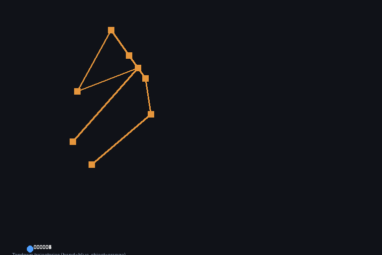
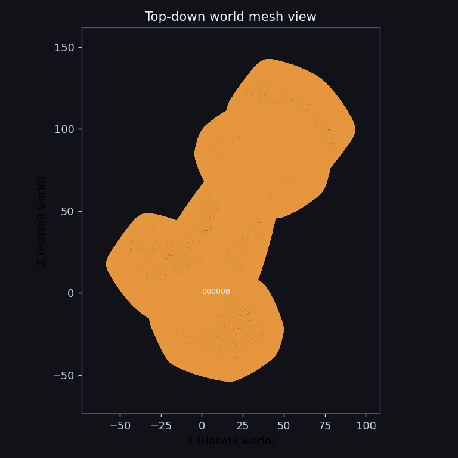
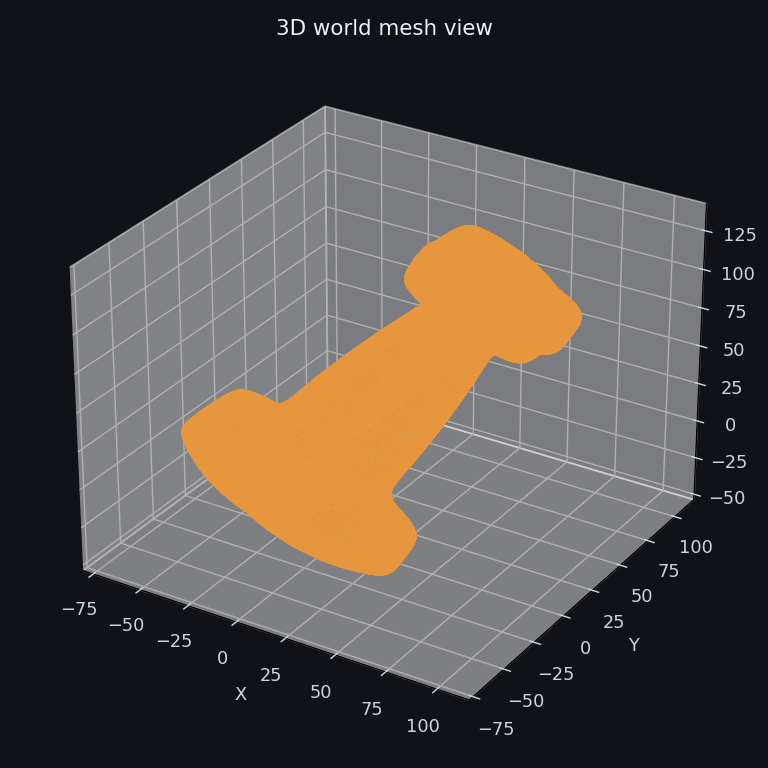
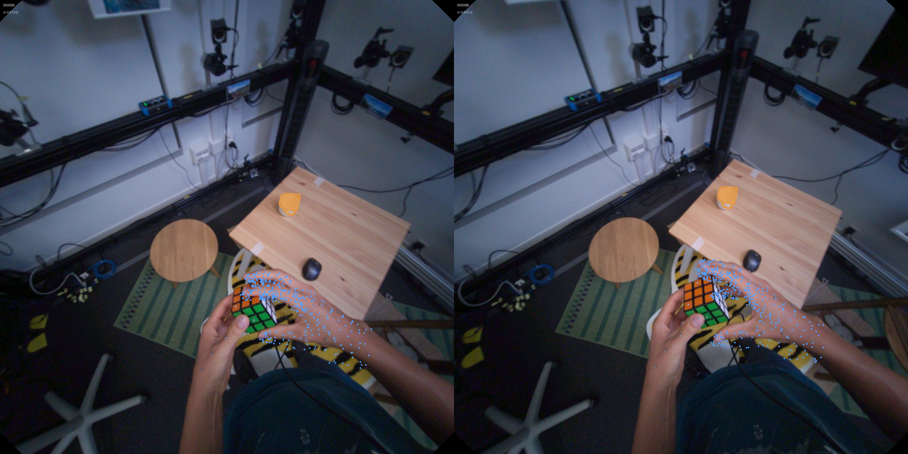

FoundationPose + HOT3D World-Hand Simple
Generated 2026-04-09 04:52:47 UTC. This page publishes the fused HOT3D simple lane from the repo-owned runner. World frame: hawor_world. Visualizations are interaction-biased (frames selected by smallest hand↔object distance) and object meshes are downsampled in time to reduce overlap.
Metrics
| hand_world_root_err_mm | 0.0000 |
|---|---|
| object_translation_cm | 7260.7935 |
| fused_temporal_position_delta | 24.4454 |
Counts
| evaluated_sequences | 1 |
|---|---|
| skipped_sequences | 0 |
| total_frames | 8 |
| object_interpolated_frames | 0 |
Sequences
| Sequence | Object | Frames | object_translation_cm | Interpolated Frames |
|---|---|---|---|---|
| P0001_10a27bf7 | dumbbell_5lb | 8 | 7260.7935 | 0 |
Visualization Gallery

Topdown Trajectory · dumbbell_5lb

World Mesh (Topdown) · dumbbell_5lb

World Mesh (3D) · dumbbell_5lb

Camera Overlay (Hand/Object) · dumbbell_5lb
Skipped
0 skipped sequence records copied from the source run.